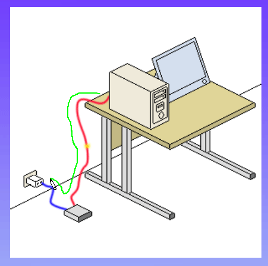
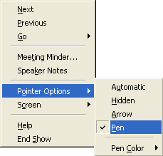
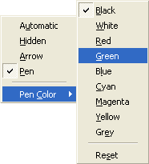
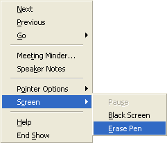
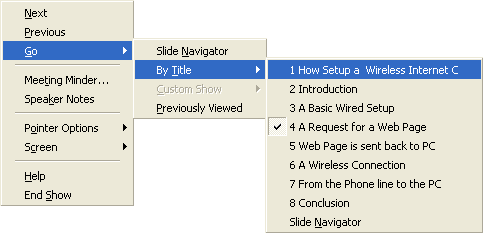

Free
powerpoint
Tutorials
|
Free
powerpoint
Tutorials
|
|
 home home |
Stay at Home and Learn | ||||
The PowerPoint Pen Tool |
|||||
|
Part 1, 2, 3, 4, 5, 6, 7, 8, 9, 10, 11
During a presentation, you have the option to use the in-built Pen tool. This can be used to draw attention to a particular aspect of a slide. For example, in slide 4 of our presentation we have an animated GIF image. The animation is a yellow wireless signal travelling from the PC to the Router. This may be hard to see at first. So you could use the pen tool to trace its path. First, here's what it looks like on screen during a presentation:  Notice that the mouse pointer has changed into a pen icon, and that it's tracing a green line. To use the Pen tool, start your presentation, and move to slide 4. Now right click anywhere on screen. You'll see a context menu appear. Select Pointer Options, then click Pen:  When you click on Pen, you'll see the mouse pointer change: To quickly get back to the normal mouse pointer, press the escape key on your keyboard. Or right click again, and select Pointer Options > Arrow. But if you start drawing on your screen with the pen you'll get a black line. To chose a different colour, click Pointer Options > Pen Color:  Select a pen colour and start drawing on your screen: To erase what you have drawn, right click anywhere on screen:  From the menu, select Screen > Erase Pen. Another useful option on the right click menu is Go. This allows you to jump to any slide in your presentation: 
The menu also has options to go to the Next slide, or the Previous slide. If you want to quit the presentation, you can also click the End Show option. (A quick way to end your presentation is just to press the escape key on your keyboard.) And that completes your second presentation. If you've finished all 8 slides, it should look exactly like ours!
In the next presentation, we'll be doing something more business-like,
with charts, flow charts, and tables.
|
||||